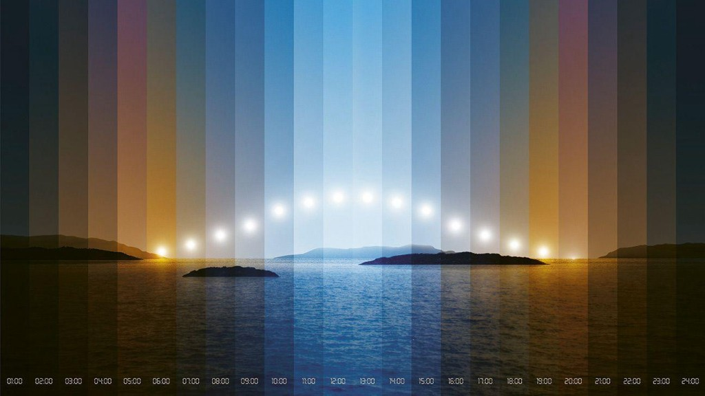

Interior Palette
安静的书房
光在余光里变。
色温偏移克制，纸张始终像纸。晨昏变化柔和，正午也不抢文字。
百叶窗把阳光切成有秩序的段落。这里的色彩偏向室内反射光，而不是直接引用天空。
高亮像这样仍然清楚，因为纸张没有跟着窗外天蓝走得太远。
左侧为现有室内低饱和色板；右侧为从新的 24 小时自然光色卡逐小时采样的 skyCard， 纸张色经 OKLab 降饱和 + 混白派生。拖动下方时间轴，观察同一时刻的光影与可读性差异。

Interior Palette
色温偏移克制，纸张始终像纸。晨昏变化柔和，正午也不抢文字。
百叶窗把阳光切成有秩序的段落。这里的色彩偏向室内反射光，而不是直接引用天空。
高亮像这样仍然清楚，因为纸张没有跟着窗外天蓝走得太远。
Seascape Palette
窗外光按 24 个整点采样并连续插值；纸张混白降饱和，保留可读性。
清晨和黄昏会明显更金橙，正午百叶缝里透出天蓝色。
纸张仍保持可读，但你能感到窗外是一条完整的昼夜弧线。